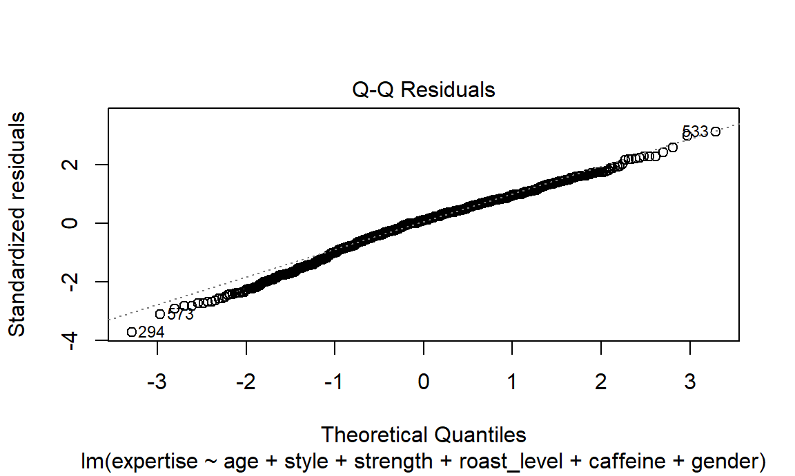
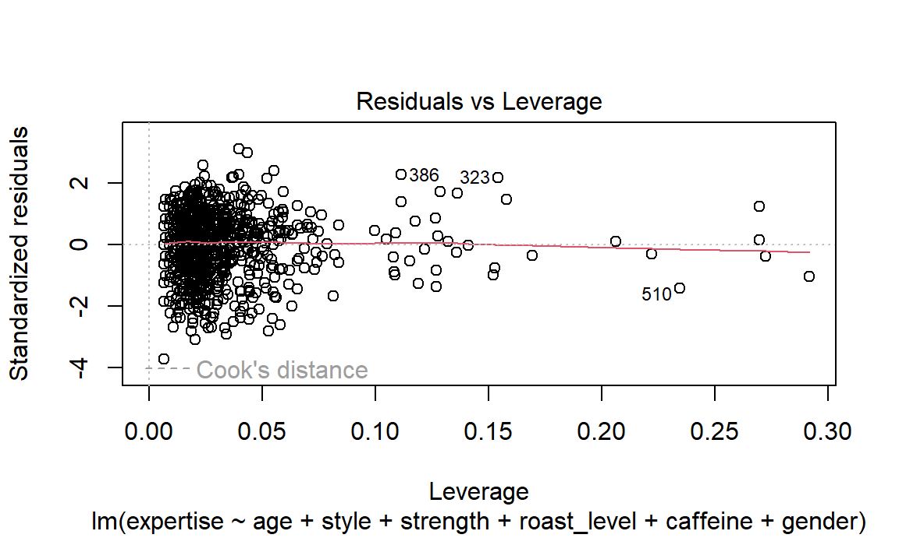

Analysis
Factors that influence people’s self-perceived expertise
Lasso
survey_model = survey_tidy |>
distinct(submission_id, .keep_all = TRUE) |>
select(expertise, age, favorite, style, strength, roast_level,
caffeine, gender, education_level, bitterness, acidity, prefer_overall) |>
na.omit() |>
slice_sample(n = 1000)
x = model.matrix(expertise ~ ., data = survey_model)[, -1]
y = survey_model |> pull(expertise)
lambda = 10^seq(-2, 2.75, by = 0.1)
lasso_fit =
glmnet(x = x, y = y, lambda = lambda)
lasso_cv =
cv.glmnet(x = x, y = y, lambda = lambda)
## lambda of the best fit
lambda_opt = lasso_cv[["lambda.min"]]
lasso_fit_best =
glmnet(x = x, y = y, lambda = lambda_opt)
lasso_fit_best |>
broom::tidy() |>
print(n = 50)## # A tibble: 35 × 5
## term step estimate lambda dev.ratio
## <chr> <dbl> <dbl> <dbl> <dbl>
## 1 (Intercept) 1 4.23 0.0398 0.294
## 2 age55-64 years old 1 0.0166 0.0398 0.294
## 3 age35-44 years old 1 0.0933 0.0398 0.294
## 4 age18-24 years old 1 -0.0418 0.0398 0.294
## 5 age<18 years old 1 -1.18 0.0398 0.294
## 6 favoriteBlended drink 1 -1.15 0.0398 0.294
## 7 favoriteCold brew 1 -0.114 0.0398 0.294
## 8 favoriteCortado 1 0.153 0.0398 0.294
## 9 favoriteEspresso 1 0.363 0.0398 0.294
## 10 favoriteIced coffee 1 -0.386 0.0398 0.294
## 11 favoriteLatte 1 -0.132 0.0398 0.294
## 12 favoriteMocha 1 -0.00670 0.0398 0.294
## 13 favoritePourover 1 0.371 0.0398 0.294
## 14 favoriteRegular drip coffee 1 -0.0454 0.0398 0.294
## 15 styleBright 1 0.192 0.0398 0.294
## 16 styleCaramalized 1 -0.0710 0.0398 0.294
## 17 styleChocolatey 1 -0.127 0.0398 0.294
## 18 styleFloral 1 0.160 0.0398 0.294
## 19 styleFruity 1 0.218 0.0398 0.294
## 20 styleFull Bodied 1 -0.232 0.0398 0.294
## 21 styleJuicy 1 0.317 0.0398 0.294
## 22 styleSweet 1 -0.240 0.0398 0.294
## 23 strengthSomewhat light 1 -0.209 0.0398 0.294
## 24 strengthSomewhat strong 1 0.330 0.0398 0.294
## 25 strengthVery strong 1 0.336 0.0398 0.294
## 26 strengthWeak 1 -2.36 0.0398 0.294
## 27 roast_levelLight 1 0.413 0.0398 0.294
## 28 roast_levelNordic 1 1.61 0.0398 0.294
## 29 caffeineFull caffeine 1 0.291 0.0398 0.294
## 30 genderMale 1 0.974 0.0398 0.294
## 31 genderNon-binary 1 -0.113 0.0398 0.294
## 32 genderPrefer not to say 1 0.164 0.0398 0.294
## 33 education_levelBachelor's degree 1 -0.0421 0.0398 0.294
## 34 prefer_overallCoffee B 1 -0.0338 0.0398 0.294
## 35 prefer_overallCoffee D 1 0.221 0.0398 0.294Multiple Linear Regression
summary(final_mlr)##
## Call:
## lm(formula = expertise ~ age + style + strength + roast_level +
## caffeine + gender, data = survey_model)
##
## Residuals:
## Min 1Q Median 3Q Max
## -5.0311 -0.9384 0.1325 1.1141 5.4157
##
## Coefficients:
## Estimate Std. Error t value Pr(>|t|)
## (Intercept) 3.931204 0.662592 5.933 4.13e-09 ***
## age55-64 years old 0.183852 0.432757 0.425 0.67105
## age45-54 years old -0.023789 0.410849 -0.058 0.95384
## age35-44 years old 0.037934 0.384573 0.099 0.92145
## age25-34 years old -0.131862 0.376530 -0.350 0.72626
## age18-24 years old -0.311394 0.400963 -0.777 0.43757
## age<18 years old -2.359521 1.233523 -1.913 0.05606 .
## styleBright 0.656539 0.307251 2.137 0.03286 *
## styleCaramalized 0.045288 0.294884 0.154 0.87797
## styleChocolatey -0.003809 0.264127 -0.014 0.98850
## styleFloral 0.746061 0.365634 2.040 0.04158 *
## styleFruity 0.700302 0.273000 2.565 0.01046 *
## styleFull Bodied -0.116257 0.271545 -0.428 0.66865
## styleJuicy 0.834339 0.327277 2.549 0.01095 *
## styleNutty 0.317710 0.299849 1.060 0.28961
## styleSweet -0.141730 0.320516 -0.442 0.65845
## strengthSomewhat light -0.367421 0.299657 -1.226 0.22044
## strengthSomewhat strong 0.519915 0.118247 4.397 1.22e-05 ***
## strengthVery strong 0.614483 0.186242 3.299 0.00100 **
## strengthWeak -3.034198 0.579082 -5.240 1.97e-07 ***
## roast_levelDark -0.162941 0.478470 -0.341 0.73352
## roast_levelFrench 0.057383 0.780480 0.074 0.94141
## roast_levelItalian -0.429797 0.734992 -0.585 0.55884
## roast_levelLight 0.497513 0.455412 1.092 0.27491
## roast_levelMedium -0.023957 0.451951 -0.053 0.95774
## roast_levelNordic 1.949267 0.613641 3.177 0.00154 **
## caffeineHalf caff 0.088340 0.374154 0.236 0.81340
## caffeineFull caffeine 0.377762 0.300631 1.257 0.20922
## genderMale 1.043587 0.130359 8.006 3.39e-15 ***
## genderNon-binary -0.333078 0.310345 -1.073 0.28343
## genderPrefer not to say 0.753905 0.640388 1.177 0.23938
## ---
## Signif. codes: 0 '***' 0.001 '**' 0.01 '*' 0.05 '.' 0.1 ' ' 1
##
## Residual standard error: 1.64 on 969 degrees of freedom
## Multiple R-squared: 0.2788, Adjusted R-squared: 0.2565
## F-statistic: 12.49 on 30 and 969 DF, p-value: < 2.2e-16plot(final_mlr, which = 1)
plot(final_mlr, which = 2)
plot(final_mlr, which = 5)
Log linear model
library("MASS")
contingency_table <- xtabs(expertise ~ age + style + strength + roast_level +
caffeine + gender + prefer_overall, data = survey_model)
print(contingency_table)
stepwise_model <- step(loglm(expertise ~ (age + style + strength + roast_level + caffeine + gender +
prefer_overall)^2, data = contingency_table))
detach("package:MASS", unload = TRUE)summary(stepwise_model)## Formula:
## expertise ~ (age + style + strength + roast_level + caffeine +
## gender + prefer_overall)^2
## attr(,"variables")
## list(expertise, age, style, strength, roast_level, caffeine,
## gender, prefer_overall)
## attr(,"factors")
## age style strength roast_level caffeine gender prefer_overall
## expertise 0 0 0 0 0 0 0
## age 1 0 0 0 0 0 0
## style 0 1 0 0 0 0 0
## strength 0 0 1 0 0 0 0
## roast_level 0 0 0 1 0 0 0
## caffeine 0 0 0 0 1 0 0
## gender 0 0 0 0 0 1 0
## prefer_overall 0 0 0 0 0 0 1
## age:style age:strength age:roast_level age:caffeine age:gender
## expertise 0 0 0 0 0
## age 1 1 1 1 1
## style 1 0 0 0 0
## strength 0 1 0 0 0
## roast_level 0 0 1 0 0
## caffeine 0 0 0 1 0
## gender 0 0 0 0 1
## prefer_overall 0 0 0 0 0
## age:prefer_overall style:strength style:roast_level
## expertise 0 0 0
## age 1 0 0
## style 0 1 1
## strength 0 1 0
## roast_level 0 0 1
## caffeine 0 0 0
## gender 0 0 0
## prefer_overall 1 0 0
## style:caffeine style:gender style:prefer_overall
## expertise 0 0 0
## age 0 0 0
## style 1 1 1
## strength 0 0 0
## roast_level 0 0 0
## caffeine 1 0 0
## gender 0 1 0
## prefer_overall 0 0 1
## strength:roast_level strength:caffeine strength:gender
## expertise 0 0 0
## age 0 0 0
## style 0 0 0
## strength 1 1 1
## roast_level 1 0 0
## caffeine 0 1 0
## gender 0 0 1
## prefer_overall 0 0 0
## strength:prefer_overall roast_level:caffeine roast_level:gender
## expertise 0 0 0
## age 0 0 0
## style 0 0 0
## strength 1 0 0
## roast_level 0 1 1
## caffeine 0 1 0
## gender 0 0 1
## prefer_overall 1 0 0
## roast_level:prefer_overall caffeine:gender
## expertise 0 0
## age 0 0
## style 0 0
## strength 0 0
## roast_level 1 0
## caffeine 0 1
## gender 0 1
## prefer_overall 1 0
## caffeine:prefer_overall gender:prefer_overall
## expertise 0 0
## age 0 0
## style 0 0
## strength 0 0
## roast_level 0 0
## caffeine 1 0
## gender 0 1
## prefer_overall 1 1
## attr(,"term.labels")
## [1] "age" "style"
## [3] "strength" "roast_level"
## [5] "caffeine" "gender"
## [7] "prefer_overall" "age:style"
## [9] "age:strength" "age:roast_level"
## [11] "age:caffeine" "age:gender"
## [13] "age:prefer_overall" "style:strength"
## [15] "style:roast_level" "style:caffeine"
## [17] "style:gender" "style:prefer_overall"
## [19] "strength:roast_level" "strength:caffeine"
## [21] "strength:gender" "strength:prefer_overall"
## [23] "roast_level:caffeine" "roast_level:gender"
## [25] "roast_level:prefer_overall" "caffeine:gender"
## [27] "caffeine:prefer_overall" "gender:prefer_overall"
## attr(,"order")
## [1] 1 1 1 1 1 1 1 2 2 2 2 2 2 2 2 2 2 2 2 2 2 2 2 2 2 2 2 2
## attr(,"intercept")
## [1] 1
## attr(,"response")
## [1] 1
## attr(,".Environment")
## <environment: R_GlobalEnv>
##
## Statistics:
## X^2 df P(> X^2)
## Likelihood Ratio 12781.55 146486 1
## Pearson NaN 146486 NaNFactors that influence survey ratings
Difference among bitterness, acidity, and preference
survey_anova = survey_tidy |>
select(coffee_name, bitterness, acidity, preference) |>
na.omit() |>
slice_sample(n = 1000)Bitterness:
anova_bitterness = aov(bitterness ~ coffee_name, data = survey_anova)
summary(anova_bitterness)## Df Sum Sq Mean Sq F value Pr(>F)
## coffee_name 3 180.4 60.14 58.49 <2e-16 ***
## Residuals 996 1024.2 1.03
## ---
## Signif. codes: 0 '***' 0.001 '**' 0.01 '*' 0.05 '.' 0.1 ' ' 1pairwise_bitterness = pairwise.t.test(survey_anova$bitterness, survey_anova$coffee_name,
p.adjust.method = "bonferroni")
survey_anova |>
group_by(coffee_name) |>
summarise(
mean_bitterness = mean(bitterness))## # A tibble: 4 × 2
## coffee_name mean_bitterness
## <fct> <dbl>
## 1 Coffee A 2.12
## 2 Coffee B 2.98
## 3 Coffee C 3.04
## 4 Coffee D 2.22print(pairwise_bitterness)##
## Pairwise comparisons using t tests with pooled SD
##
## data: survey_anova$bitterness and survey_anova$coffee_name
##
## Coffee A Coffee B Coffee C
## Coffee B < 2e-16 - -
## Coffee C < 2e-16 1 -
## Coffee D 1 3.9e-15 < 2e-16
##
## P value adjustment method: bonferroniAcidity:
anova_acidity = aov(acidity ~ coffee_name, data = survey_anova)
summary(anova_acidity)## Df Sum Sq Mean Sq F value Pr(>F)
## coffee_name 3 528.4 176.14 204.1 <2e-16 ***
## Residuals 996 859.5 0.86
## ---
## Signif. codes: 0 '***' 0.001 '**' 0.01 '*' 0.05 '.' 0.1 ' ' 1pairwise_acidity = pairwise.t.test(survey_anova$acidity, survey_anova$coffee_name,
p.adjust.method = "bonferroni")
survey_anova |>
group_by(coffee_name) |>
summarise(
mean_acidity = mean(acidity))## # A tibble: 4 × 2
## coffee_name mean_acidity
## <fct> <dbl>
## 1 Coffee A 3.55
## 2 Coffee B 2.13
## 3 Coffee C 2.34
## 4 Coffee D 3.81print(pairwise_acidity)##
## Pairwise comparisons using t tests with pooled SD
##
## data: survey_anova$acidity and survey_anova$coffee_name
##
## Coffee A Coffee B Coffee C
## Coffee B <2e-16 - -
## Coffee C <2e-16 0.075 -
## Coffee D 0.010 <2e-16 <2e-16
##
## P value adjustment method: bonferroniPreference
anova_preference = aov(preference ~ coffee_name, data = survey_anova)
summary(anova_preference)## Df Sum Sq Mean Sq F value Pr(>F)
## coffee_name 3 16.7 5.552 3.487 0.0154 *
## Residuals 996 1585.7 1.592
## ---
## Signif. codes: 0 '***' 0.001 '**' 0.01 '*' 0.05 '.' 0.1 ' ' 1pairwise_preference = pairwise.t.test(survey_anova$preference, survey_anova$coffee_name,
p.adjust.method = "bonferroni")
survey_anova |>
group_by(coffee_name) |>
summarise(
mean_preference = mean(preference))## # A tibble: 4 × 2
## coffee_name mean_preference
## <fct> <dbl>
## 1 Coffee A 3.29
## 2 Coffee B 3.11
## 3 Coffee C 2.97
## 4 Coffee D 3.26print(pairwise_preference)##
## Pairwise comparisons using t tests with pooled SD
##
## data: survey_anova$preference and survey_anova$coffee_name
##
## Coffee A Coffee B Coffee C
## Coffee B 0.660 - -
## Coffee C 0.026 1.000 -
## Coffee D 1.000 1.000 0.062
##
## P value adjustment method: bonferroni